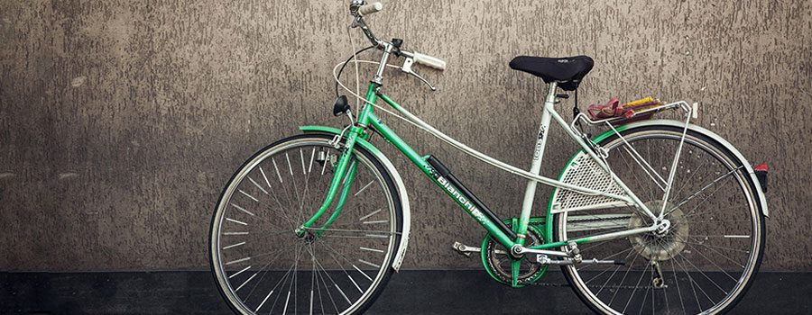

Implicit memory, also known as automatic or unconscious memory, allows us to perform tasks without actively thinking about them. It is crucial for daily activities such as riding a bicycle, playing a musical instrument, or even walking.
This type of memory is built through repetition and practice, making many actions almost second nature. Brain regions like the basal ganglia, cerebellum, and motor cortex are key to its formation.
Many athletes rely on implicit memory to execute complex movements automatically under pressure.